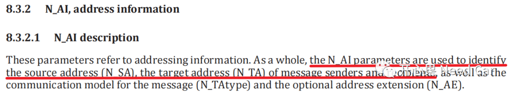
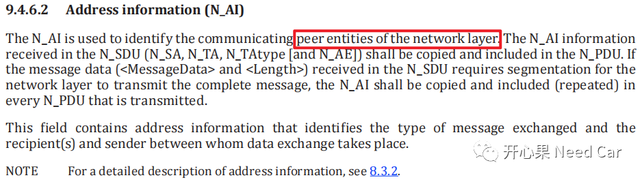
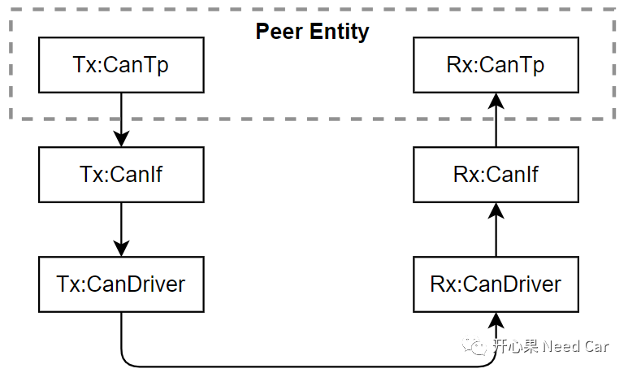
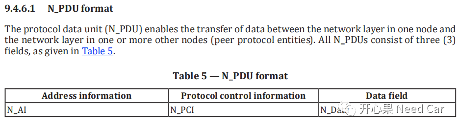
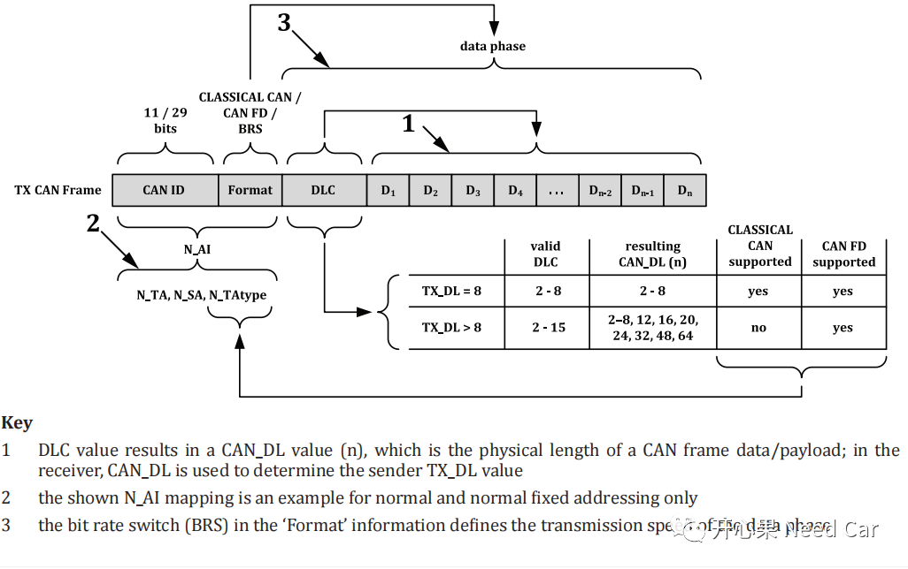
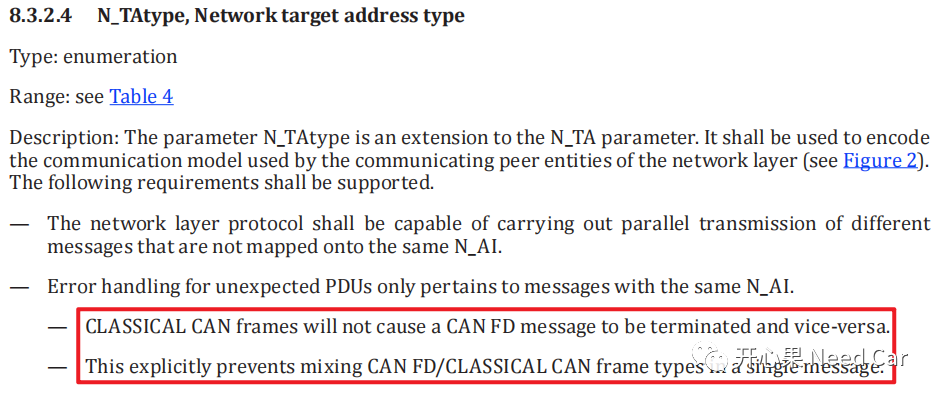
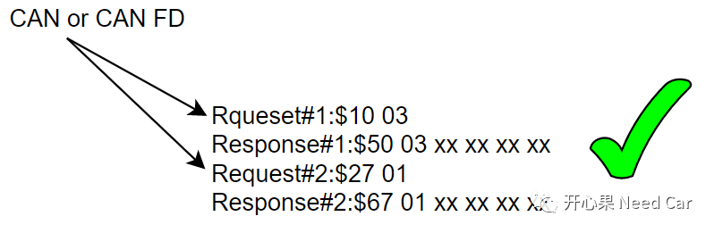
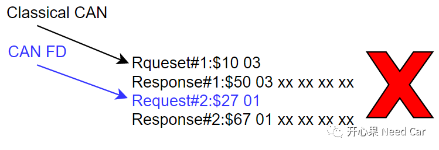

开心果 Need Car · 2022-11-23T13:07:00+08:00 · 微信原文
工程中，随着CAN FD的使用越来越普及，随之而来的问题，也越来越多。本文讨论一个问题：CAN总线既支持Classical CAN格式报文，也支持CAN FD格式报文，诊断的过程中，可以混合使用Classical CAN格式和CAN FD格式的诊断报文吗？
1、N_AI定义
找到这个问题的答案之前，我们先理解一下N_AI（Network Address Information）的概念。15765-2的规范中，这样解释N_AI，如下所示：

解释：意思是说，N_AI这个参数用于识别诊断通信过程中的源地址和目标地址。

解释：N_AI的另一种作用解释就是标识网络层的对等实体（peer entities）。什么是对等实体？答：个人理解，特定的信息只有到达指定的模块，才能被解析。也可以将其看作特定协议的解析者，比如：15765，CanTp层才能解析，如下所示：

2、N_AI在CAN报文中的位置

具体到CAN Frame，N_AI位置示意如下所示：

这里可以看出：Classical CAN和CAN FD的不同，意味着N_AI的不同。N_AI信息会映射到网络传输层（CanTp），N_AI的不同，意味着寻址方式的不同，即使Classical CAN和CAN FD的CANID相同，CanTp层建立的Connection也不同。
3、相同CAN ID（不同N_AI）的非预期帧处理策略
之前我们聊过：诊断处理过程中，收到非预期诊断报文（Unexpected PDU）的处理方式，可以回顾前文Uds诊断：Unexpected N_PDU处理策略。这个策略适用于相同CANID，但是N_AI不同的诊断报文吗？看一下15765给出的解释，如下所示：

解释：Unexpected N_PDU的处理只适用于相同N_AI的诊断报文。Classical CAN和CAN FD的N_AI本就不同，所以，互不干扰，可以并行处理；单个Message中不要混用Classical CAN和CAN FD。
提示：工程开发中，即使CAN ID相同，也可以既支持Classical CAN，也支持CAN FD。
综上，Classical CAN和CAN FD的CAN ID相同，但是Format不同，构成的N_AI不同，所以，在CanTp层建立的peer entity不同，工程使用过程中，可以并行使用，但是不能交叉混用。


往期精彩回顾